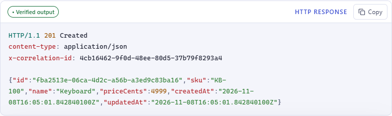

A CRUD by hand in the 0.1 layout (compatibility)
For projects that keep the 0.1 layout - a products API built piece by piece (Spring service, PostgreSQL, Flyway, validation, transactions, forwarding routes, tokens), with the real responses. New projects get the CRUD generated in the official structure.
Prerequisites
- Node 24 or newer
- JDK 21
- Docker
- the pso CLI
By the end of this page you will have a products API running on your machine: a Spring Boot service that stores products in PostgreSQL, behind a PSO orchestrator that checks who is calling. You will create, list, read, update and delete products, look at the rows in the database after each step, and provoke every common error on purpose.
Everything here was run, in this order, on an empty folder. Output marked Verified output is copied from that run. Where a block is not from the run, it says so.
What you will build#
- Client client
- connects through Bearer tokenOrchestrator orchestrator, Node, :3000checks the token and scope; exposes only declared routes
- connects through forwardsService catalog, Spring Boot, :8081checks the token again, validates the body, runs the transaction
- Database PostgreSQL, :5432
- connects through forwardsService catalog, Spring Boot, :8081checks the token again, validates the body, runs the transaction
- connects through Bearer tokenOrchestrator orchestrator, Node, :3000checks the token and scope; exposes only declared routes
| Public route (orchestrator) | Reaches the service as | Scope | Success |
|---|---|---|---|
POST /products | POST /catalog/products | products:write | 201 and the created product |
GET /products | GET /catalog/products | products:read | 200 and a list |
GET /products/:id | GET /catalog/products/{id} | products:read | 200, or 404 |
PUT /products/:id | PUT /catalog/products/{id} | products:write | 200 and the updated product |
DELETE /products/:id | DELETE /catalog/products/{id} | products:write | 204 |
The /catalog prefix is added once, by PSO, on the way to the service (service prefix).
Why it is built in layers#
| Layer | Owns | Why it is separate |
|---|---|---|
| Orchestrator route | which URLs exist and who may call them | nothing is reachable until it is declared in ROUTES.pso.ts (why) |
| Controller | parsing and the HTTP status | no business rules, no SQL |
| Service | the transaction | the only place that decides which changes happen together |
| Repository | data access | Spring Data generates it from an interface |
| Entity | how the data is stored | never sent to clients |
| Request and response records | the public contract | you can change the table without changing the API |
| Mapper | where fields cross the boundary | one visible place |
| Flyway migration | the schema | versioned like code, reviewed like code |
The orchestrator may validate bodies early (DTO validation), but the service always validates for itself: it must stay safe if it is ever called by something other than the orchestrator. This tutorial validates in the service. See gateway or service validation.
Before you start#
node --version # 24 or newerjava -version # 21 or newerdocker --versionpso --help # confirms that the CLI starts and lists its commandsYou also need curl. The examples use a Unix shell; on Windows use Git Bash, or translate the curl lines.
1. Create the workspace#
pso create workspace shopcd shopcreated .gitignorecreated README.mdcreated pso.workspace.json- folder shop/
- file .gitignoreGeneratedignores node_modules, dist, target, .pso/ and keys/*.private.pem
- Markdown file README.mdGenerated
- JSON file pso.workspace.jsonGeneratedthe list of services, empty for now
The workspace file is the map of your platform: every service, its runtime, port and role. pso validate reads it.
2. Create the Spring Boot service with PostgreSQL#
pso create service catalog --structure legacy --template empty --db postgres --port 8081created pom.xmlcreated mvnwcreated mvnw.cmdcreated .mvn/wrapper/maven-wrapper.propertiescreated lombok.configcreated src/main/java/com/pso/catalog/Application.javacreated src/main/java/com/pso/catalog/application/PingService.javacreated src/main/java/com/pso/catalog/contracts/PingDto.javacreated src/main/java/com/pso/catalog/contracts/PingRequest.javacreated src/main/java/com/pso/catalog/routes/PingController.javacreated src/main/resources/application.ymlcreated src/main/resources/application-dev.yml (and -h2, -local, -prod, -staging, -test)created src/main/resources/db/migration/.gitkeepcreated src/test/java/com/pso/catalog/ApplicationTests.javacreated src/test/java/com/pso/catalog/DatabaseMigrationTests.javacreated src/test/java/com/pso/catalog/TestDatabaseConfig.javacreated src/test/java/com/pso/catalog/application/PingServiceTests.javacreated src/test/java/com/pso/catalog/routes/PingControllerTests.javaregistered "catalog" in pso.workspace.json (port 8081)The real command prints one created line per file, including the six profile files; the list above abbreviates them.
- folder catalog/
- XML file pom.xmlGeneratedSpring Boot 3.5, the PSO BOM, the security, HTTP and data starters
- shell script mvnwGeneratedMaven Wrapper, no Maven install needed
- shell script mvnw.cmdGenerated
- file lombok.configGenerated
- folder src/
- folder main/
- folder java/com/pso/catalog/
- Java file Application.javaGeneratedthe entry point
- Java file application/PingService.javaGeneratedthe example service, you will delete it later if you wish
- Java file contracts/PingDto.javaGenerated
- Java file routes/PingController.javaGeneratedthe example controller
- folder resources/
- YAML file application.ymlGeneratedyou will extend it in step 4
- YAML file application-local.ymlGeneratedused by pso dev and by this tutorial
- YAML file application-prod.ymlGenerated
- folder db/migration/Generatedempty; step 3 adds the first migration
- folder java/com/pso/catalog/
- folder test/java/com/pso/catalog/
- Java file TestDatabaseConfig.javaGeneratedan embedded PostgreSQL for the tests
- folder main/
Only the files this tutorial touches are listed (the profile files -dev, -h2, -staging, -test and the other tests are omitted). --db postgres already added the data starter to pom.xml:
<dependency> <groupId>com.pso</groupId> <artifactId>pso-data-spring-boot-starter</artifactId></dependency>That one starter brings Spring Data JPA, Flyway and the PostgreSQL driver, with versions managed by the PSO BOM. The generated test dependencies include an embedded PostgreSQL, so the tests need no Docker.
An existing service can adopt PostgreSQL later with pso database:enable postgresql --service catalog.
3. Create the orchestrator#
pso create orchestrator gateway --structure legacy --template emptycreated package.jsoncreated src/guards/jwt.guard.tscreated src/main.tscreated tsconfig.jsoncreated src/configs/.gitkeep (and contracts, filters, middlewares, routes, services)registered "gateway" in pso.workspace.json (port 3000)- folder gateway/
- JSON file package.jsonGeneratedscripts build, dev, start and the @pso dependencies
- JSON file tsconfig.jsonGenerateddecorators enabled
- folder src/
- TypeScript file main.tsGeneratedstarts the HTTP runtime
- TypeScript file guards/jwt.guard.tsGeneratedthe "jwt" guard that routes refer to
- folder routes/Generatedempty. Modules go here
- folder configs/Generatedempty
- folder contracts/Generatedempty
- folder filters/Generatedempty
- folder middlewares/Generatedempty
- folder services/Generatedempty
Now the workspace file lists both services:
{ "schemaVersion": 1, "name": "shop", "services": [ { "name": "catalog", "path": "catalog", "runtime": "spring-boot", "role": "service", "prefix": "/catalog", "db": "postgres", "port": 8081, "health": "/actuator/health" }, { "name": "gateway", "path": "gateway", "runtime": "node", "role": "orchestrator", "port": 3000, "health": "/health/ready" } ]}(The real file is pretty-printed over more lines; the content is the same.) The orchestrator reads this file to find where catalog lives and which prefix it uses.
4. Configure PostgreSQL#
4.1 Start a database#
The database of this tutorial is development infrastructure: it gets its own Compose file, infra/postgres.compose.yml. The name docker-compose.yml in the workspace root is reserved for the deployment of the application itself, which pso docker:init generates later (Docker); docker:init never replaces a file it did not write, so keeping the two apart is what lets you go from this tutorial to the deployment guide without a conflict.
# Development database for the catalog service. The password is a throwaway for a container that listens on loopback only.services: db: image: postgres:16-alpine environment: POSTGRES_USER: catalog POSTGRES_PASSWORD: catalog-dev POSTGRES_DB: catalog ports: - "127.0.0.1:5432:5432" volumes: - catalog-data:/var/lib/postgresql/data healthcheck: test: ["CMD-SHELL", "pg_isready -U catalog -d catalog"] interval: 3s timeout: 3s retries: 10 volumes: catalog-data:docker compose -f infra/postgres.compose.yml up -d --wait Container shop-db-1 Healthy(--wait returns when the health check passes. The container name depends on your folder name.) The database listens on loopback only, and the password is a throwaway. Never reuse it.
4.2 Tell the service how to connect#
The generated application.yml already reads the connection from the environment, so credentials are never in a file:
spring: datasource: url: ${DB_URL:jdbc:postgresql://localhost:5432/catalog} username: ${DB_USER:} password: ${DB_PASSWORD:} flyway: enabled: trueAdd a connection pool and make Flyway the only writer of the schema. Insert the first block under datasource: (after password) and the second under spring: next to flyway::
hikari: # connection pool (HikariCP is Spring Boot's default) maximum-pool-size: ${DB_POOL_SIZE:10} # size it from the database's connection limit divided by the number of instances minimum-idle: ${DB_POOL_MIN_IDLE:2} connection-timeout: 5000 # ms to wait for a free connection before failing fast max-lifetime: 1800000 # ms; keep it shorter than any idle-connection timeout in front of the database jpa: open-in-view: false # no database access while the response is being rendered hibernate: ddl-auto: validate # Flyway owns the schema; Hibernate only checks that entities match it properties: hibernate: jdbc: time_zone: UTC| Setting | Why |
|---|---|
ddl-auto: validate | Hibernate checks the entities against the schema and never changes it |
open-in-view: false | no queries while the response is rendered: a lazy-loading mistake fails in the service instead of leaking a connection |
maximum-pool-size | the database has a connection limit. A starting rule: limit / instances, minus a margin for tools |
connection-timeout | when the pool is exhausted, fail in 5 s with a clear error instead of queueing requests behind a stuck query |
max-lifetime | recycle connections before a firewall silently drops idle ones |
This is the complete file after the two insertions. It is a real generated file plus those two blocks; the test of this tutorial rebuilds it and checks that it is identical:
# catalog: PSO Spring Boot service. Every value below can be overridden by an environment variable (shown as ${VAR:default}).# Unknown pso.* keys are an error at start-up (a misspelled security setting is never silently ignored).# Reference: PSO Docs > Spring Boot > Configuration reference.spring: application: name: catalog output: ansi: enabled: ${PSO_LOG_COLOR:detect} # detect | always | never (NO_COLOR is not read by Spring; use never) datasource: url: ${DB_URL:jdbc:postgresql://localhost:5432/catalog} username: ${DB_USER:} password: ${DB_PASSWORD:} hikari: # connection pool (HikariCP is Spring Boot's default) maximum-pool-size: ${DB_POOL_SIZE:10} # size it from the database's connection limit divided by the number of instances minimum-idle: ${DB_POOL_MIN_IDLE:2} connection-timeout: 5000 # ms to wait for a free connection before failing fast max-lifetime: 1800000 # ms; keep it shorter than any idle-connection timeout in front of the database flyway: enabled: true jpa: open-in-view: false # no database access while the response is being rendered hibernate: ddl-auto: validate # Flyway owns the schema; Hibernate only checks that entities match it properties: hibernate: jdbc: time_zone: UTC # no default profile on purpose: choose one explicitly (local, dev, test, staging, prod, h2); `pso dev` uses local. server: port: ${PORT:8081} address: ${HOST:127.0.0.1} shutdown: graceful error: include-message: never include-stacktrace: never # Logging uses Spring Boot's own facilities (Logback). Console pattern: timestamp, level, [service,correlationId,traceId], logger, message.# PSO_LOG_LEVEL changes the root level (TRACE, DEBUG, INFO, WARN, ERROR, OFF). Production profiles write structured JSON (see application-prod.yml).logging: level: root: ${PSO_LOG_LEVEL:INFO} pattern: level: "%5p [${spring.application.name:},%X{correlationId:-},%X{traceId:-}]" management: endpoints: web: exposure: include: health endpoint: health: probes: enabled: true show-details: never pso: service: name: catalog # Endpoint prefix applied once, by PSO, to every @RestController (controllers map paths WITHOUT it). # Keep it equal to the "prefix" of this service in pso.workspace.json: `pso validate` checks it. "/" disables the prefix. prefix: ${PSO_SERVICE_PREFIX:/catalog} security: jwt: # tokens are validated here with the issuer's public keys; the service never trusts the caller jwks-uri: ${PSO_JWT_JWKS_URI:} issuer: ${PSO_JWT_ISSUER:} audience: ${PSO_JWT_AUDIENCE:} algorithms: ${PSO_JWT_ALGORITHMS:ES256,RS256} clock-skew: 30s roles-claim: roles # an identity provider on a private network is approved by naming it: host:port of the JWKS URI (anything else private is refused) private-hosts: ${PSO_JWT_JWKS_PRIVATE_HOSTS:} # PEM file with the certificate authority of the identity provider, when it is not a public one ca-file: ${PSO_JWT_JWKS_CA_FILE:} cors: # off by default; origins are always explicit (never *) enabled: ${PSO_CORS_ENABLED:false} allowed-origins: ${PSO_CORS_ORIGINS:} allowed-methods: [GET, POST, PUT, PATCH, DELETE, OPTIONS] allowed-headers: [Authorization, Content-Type, X-Correlation-ID] allow-credentials: false max-age: 30m rules: [] # explicit authorization rules; everything not listed requires a valid token # - path: /ping/** # relative to the service prefix # methods: [GET] # access: SCOPES # PUBLIC | AUTHENTICATED | SCOPES # scopes: [ping:read] http: client: services: {} # named remote services for PsoHttpClient; nothing outside this list can be called # customers: # base-url: https://customers.internal:8443 # forward-bearer: false # retry: { max-attempts: 2 } # tls: { ca-file: /run/pso/tls/ca.crt } # PEM authority: the file the orchestrator uses (trust-store for PKCS12/JKS) limits: requests: enabled: true per-minute: ${PSO_RATE_LIMIT_PER_MINUTE:600} # per-principal: true # a budget of its own for each authenticated caller # trusted-proxies: [ "10.0.0.0/8" ] # X-Forwarded-For counts only from these peers # routes: # stricter, route-specific budgets (route without the service prefix) # - { route: "POST /customers", limit: 10, window-seconds: 60, burst: 5 } # provider: redis # shared budget: add com.pso:pso-ratelimit-redis-starter and set redis-url from the environment body: max-size: 2MB multipart: enabled: false max-file-size: 5MB max-request-size: 10MB header: max-size: 16KB timeouts: connection: 10s async-request: 30s concurrency: max-requests: 0 # 0 = unlimited dispatch: # installed on demand: `pso dispatch:install <redis|rabbitmq|kafka>`; nothing connects while enabled is false enabled: false provider: none max-message-size: 1MB consumer: concurrency: 1 batch-size: 10 retry: # in-process retries with backoff; the message stays unacknowledged meanwhile enabled: true max-attempts: 3 initial-delay: 1s max-delay: 30s multiplier: 2.0 dead-letter: # exhausted and poison messages go to <channel>.dlq enabled: true observability: enabled: true idempotency: retention: 24h outbox: # transactional outbox (needs a database): events are stored with your data and relayed afterwards enabled: false database: # none | h2 | postgresql (`pso database:enable <h2|postgresql>`) provider: postgresql observability: correlation: enabled: true header: X-Correlation-ID # development diagnostics: log the message and stack trace of an unexpected exception (`pso dev` turns it on; ignored with a production profile) error-details: ${PSO_LOG_ERROR_DETAILS:false}4.3 Environment variables#
export DB_URL=jdbc:postgresql://127.0.0.1:5432/catalogexport DB_USER=catalogexport DB_PASSWORD=catalog-dev$env:DB_URL = "jdbc:postgresql://127.0.0.1:5432/catalog"$env:DB_USER = "catalog"$env:DB_PASSWORD = "catalog-dev"For anything other than your laptop, read the password from a secret manager (secrets).
5. The migration#
Flyway applies every V<number>__<name>.sql file in src/main/resources/db/migration/ exactly once, in order, and records it. The template shipped V1; yours is the next number:
pso make:migration create-products --service catalogThat creates V1__create_products.sql. Replace its content with:
-- Migrations are append-only: never edit an applied version, add a new one (V2__..., V3__...).CREATE TABLE products ( id UUID PRIMARY KEY, sku VARCHAR(32) NOT NULL, name VARCHAR(120) NOT NULL, price_cents BIGINT NOT NULL CHECK (price_cents > 0), created_at TIMESTAMPTZ NOT NULL DEFAULT now(), updated_at TIMESTAMPTZ NOT NULL DEFAULT now(), version BIGINT NOT NULL DEFAULT 0, CONSTRAINT uq_products_sku UNIQUE (sku));Why the table looks like this:
- The constraints (
NOT NULL,CHECK,UNIQUE) live in the database too. The application validates for good messages; the database is the last line of defence when two requests race. versionsupports optimistic locking (step 6).- Never edit a migration after it has been applied anywhere: Flyway stores a checksum and refuses to start if it changed. Add
V2__...instead.
6. The domain: entity and repository#
package com.pso.catalog.domain; import jakarta.persistence.Column;import jakarta.persistence.Entity;import jakarta.persistence.Id;import jakarta.persistence.Table;import jakarta.persistence.Version;import java.time.Instant;import java.util.UUID; /** Persistence model. It is never returned from a controller: the API contract is ProductResponse. */@Entity@Table(name = "products")public class Product { @Id private UUID id; @Column(nullable = false, length = 32, updatable = false) private String sku; @Column(nullable = false, length = 120) private String name; @Column(name = "price_cents", nullable = false) private long priceCents; @Column(name = "created_at", nullable = false, updatable = false) private Instant createdAt; @Column(name = "updated_at", nullable = false) private Instant updatedAt; @Version private long version; protected Product() { // required by JPA } public Product(String sku, String name, long priceCents) { this.id = UUID.randomUUID(); this.sku = sku; this.name = name; this.priceCents = priceCents; this.createdAt = Instant.now(); this.updatedAt = this.createdAt; } public void change(String name, long priceCents) { this.name = name; this.priceCents = priceCents; this.updatedAt = Instant.now(); } public UUID getId() { return id; } public String getSku() { return sku; } public String getName() { return name; } public long getPriceCents() { return priceCents; } public Instant getCreatedAt() { return createdAt; } public Instant getUpdatedAt() { return updatedAt; }}- The constructor creates the id (a UUID), so the id is known before the insert and no round trip is needed to learn it.
@Versionis optimistic locking: if two requests update the same row from the same starting version, the second fails instead of silently overwriting the first.skuisupdatable = false: the entity itself refuses to change it.
package com.pso.catalog.persistence; import com.pso.catalog.domain.Product;import java.util.UUID;import org.springframework.data.jpa.repository.JpaRepository; /** Spring Data generates the implementation. Derived queries are parameterised: values are never concatenated into SQL. */public interface ProductRepository extends JpaRepository<Product, UUID> { boolean existsBySku(String sku);}existsBySku is a derived query. Spring Data turns the method name into a parameterised statement, so request data is never concatenated into SQL.
7. The contract: request, update and response records#
Three records describe what crosses the API. None of them is the entity.
package com.pso.catalog.contracts; import jakarta.validation.constraints.NotBlank;import jakarta.validation.constraints.Pattern;import jakarta.validation.constraints.Positive;import jakarta.validation.constraints.Size; /** * What a client may send. The sku is part of the create request only: it identifies the product and cannot be changed afterwards, * so the update request leaves it out (an unknown "sku" in an update is ignored by Jackson's defaults in Spring Boot, never applied). */public record ProductRequest( @NotBlank @Pattern(regexp = "[A-Z0-9-]{3,32}", message = "must be 3-32 characters: A-Z, 0-9 or -") String sku, @NotBlank @Size(max = 120) String name, @Positive long priceCents) {}package com.pso.catalog.contracts; import jakarta.validation.constraints.NotBlank;import jakarta.validation.constraints.Positive;import jakarta.validation.constraints.Size; /** The fields a client may change on an existing product. */public record ProductUpdate(@NotBlank @Size(max = 120) String name, @Positive long priceCents) {}package com.pso.catalog.contracts; import java.time.Instant;import java.util.UUID; /** The public contract. Internal columns (version) are deliberately absent. */public record ProductResponse(UUID id, String sku, String name, long priceCents, Instant createdAt, Instant updatedAt) {}ProductUpdate has no sku: a sku cannot be changed, so the contract does not offer it. ProductResponse has no version: internal columns do not leak. If the entity were the API, adding a column would change what clients receive.
package com.pso.catalog.adapters; import com.pso.catalog.contracts.ProductRequest;import com.pso.catalog.contracts.ProductResponse;import com.pso.catalog.domain.Product;import org.springframework.stereotype.Component; /** Hand-written mapping keeps the boundary explicit: every field that crosses it is a decision, not a side effect of reflection. */@Componentpublic class ProductMapper { public Product toEntity(ProductRequest request) { return new Product(request.sku(), request.name().strip(), request.priceCents()); } public ProductResponse toResponse(Product p) { return new ProductResponse(p.getId(), p.getSku(), p.getName(), p.getPriceCents(), p.getCreatedAt(), p.getUpdatedAt()); }}8. The service: where the transaction lives#
package com.pso.catalog.application; import com.pso.catalog.adapters.ProductMapper;import com.pso.catalog.contracts.ProductRequest;import com.pso.catalog.contracts.ProductResponse;import com.pso.catalog.contracts.ProductUpdate;import com.pso.catalog.domain.Product;import com.pso.catalog.persistence.ProductRepository;import java.util.List;import java.util.UUID;import org.springframework.http.HttpStatus;import org.springframework.stereotype.Service;import org.springframework.transaction.annotation.Transactional;import org.springframework.web.server.ResponseStatusException; /** * The transaction boundary. Each public method is one unit of work: either every change commits, or none does. * Reads are marked readOnly so the connection can skip dirty checking. */@Servicepublic class ProductService { private final ProductRepository products; private final ProductMapper mapper; public ProductService(ProductRepository products, ProductMapper mapper) { this.products = products; this.mapper = mapper; } @Transactional public ProductResponse create(ProductRequest request) { if (products.existsBySku(request.sku())) { throw new ResponseStatusException(HttpStatus.CONFLICT, "a product with this sku already exists"); } return mapper.toResponse(products.save(mapper.toEntity(request))); } @Transactional(readOnly = true) public List<ProductResponse> list() { return products.findAll().stream().map(mapper::toResponse).toList(); } @Transactional(readOnly = true) public ProductResponse get(UUID id) { return mapper.toResponse(find(id)); } @Transactional public ProductResponse update(UUID id, ProductUpdate update) { Product product = find(id); product.change(update.name().strip(), update.priceCents()); // dirty checking writes the UPDATE when the transaction commits return mapper.toResponse(product); } @Transactional public void delete(UUID id) { products.delete(find(id)); } private Product find(UUID id) { return products.findById(id).orElseThrow(() -> new ResponseStatusException(HttpStatus.NOT_FOUND)); }}- Each public method is one transaction. If
createthrows after checking for a duplicate, nothing is stored. updatedoes not callsave: the entity is managed inside the transaction, so changing it is enough. Hibernate writes oneUPDATEat commit (dirty checking) and incrementsversion.- Reads use
readOnly = true. - Failures the caller can fix are
ResponseStatusExceptions. PSO turns them into RFC 9457 problems with the status you chose. - The
existsBySkucheck gives a friendly409. Two simultaneous requests can both pass it; then theUNIQUEconstraint rejects the second insert. That rare case surfaces as a generic error unless you map it.
9. The controller#
package com.pso.catalog.routes; import com.pso.catalog.application.ProductService;import com.pso.catalog.contracts.ProductRequest;import com.pso.catalog.contracts.ProductResponse;import com.pso.catalog.contracts.ProductUpdate;import jakarta.validation.Valid;import java.util.List;import java.util.UUID;import org.springframework.http.HttpStatus;import org.springframework.security.access.prepost.PreAuthorize;import org.springframework.web.bind.annotation.DeleteMapping;import org.springframework.web.bind.annotation.GetMapping;import org.springframework.web.bind.annotation.PathVariable;import org.springframework.web.bind.annotation.PostMapping;import org.springframework.web.bind.annotation.PutMapping;import org.springframework.web.bind.annotation.RequestBody;import org.springframework.web.bind.annotation.RequestMapping;import org.springframework.web.bind.annotation.ResponseStatus;import org.springframework.web.bind.annotation.RestController; /** HTTP only: parse, validate, delegate. The service prefix (/catalog) is applied by PSO, so mappings do not repeat it. */@RestController@RequestMapping("/products")public class ProductController { private final ProductService service; public ProductController(ProductService service) { this.service = service; } @GetMapping @PreAuthorize("hasAuthority('SCOPE_products:read')") public List<ProductResponse> list() { return service.list(); } @GetMapping("/{id}") @PreAuthorize("hasAuthority('SCOPE_products:read')") public ProductResponse get(@PathVariable UUID id) { return service.get(id); } @PostMapping @ResponseStatus(HttpStatus.CREATED) @PreAuthorize("hasAuthority('SCOPE_products:write')") public ProductResponse create(@Valid @RequestBody ProductRequest request) { return service.create(request); } @PutMapping("/{id}") @PreAuthorize("hasAuthority('SCOPE_products:write')") public ProductResponse update(@PathVariable UUID id, @Valid @RequestBody ProductUpdate update) { return service.update(id, update); } @DeleteMapping("/{id}") @ResponseStatus(HttpStatus.NO_CONTENT) @PreAuthorize("hasAuthority('SCOPE_products:write')") public void delete(@PathVariable UUID id) { service.delete(id); }}@Validruns Jakarta Validation on the body. A violation never reaches the service.@PreAuthorize("hasAuthority('SCOPE_products:read')")requires the scope in the token. Anything not explicitly allowed requires authentication.- Mappings do not include
/catalog: PSO adds the prefix. - Registration needs no extra file. Spring finds the
@RestControllerby component scanning, and the PSO starters (already inpom.xml) configure security, errors and logging. Spring has noMODULE.pso.ts: that file exists only in orchestrators.
Where each file goes#
pso validate checks the layout, and it fails if a class is in the wrong directory: a mapper must live in adapters/, a repository in persistence/, services in application/, controllers in routes/ and request or response records in contracts/. The example follows that layout, and its test runs pso validate before it compiles anything. The entity sits in domain/. See Java project structure.
Delete the example PingController, PingService, PingDto, PingRequest and their tests if you do not want them; the tutorial does not depend on them.
10. Compile and run the service's tests#
cd catalog./mvnw testThe tests (ProductCrudTests) start an in-process PostgreSQL, apply the real migrations and validate real signed tokens. No Docker is needed for them.
| Test | What it proves |
|---|---|
flywayAppliedTheProductsMigration | version 2 ran |
createReadUpdateDeleteRoundTrip | the happy path, the stored row after the update, version never exposed, 404 after delete |
invalidInputIsA400ProblemWithFieldErrorsAndNothingIsStored | validation rejects and the row count is unchanged |
aDuplicateSkuIsA409... | the friendly error, and the UNIQUE constraint rejecting a direct insert |
scopesAreEnforcedBeforeAnythingTouchesTheDatabase | 403/401 and no row created by a read-only token |
aFailureInsideATransactionRollsEverythingBack | a row inserted, then an exception: the row is gone |
Tests run: 6, Failures: 0, Errors: 0, Skipped: 0That result comes from the framework's own run of exactly these files (spring-crud-example.test.ts).
11. Connect the orchestrator to the service#
The orchestrator exposes nothing by default. You declare a module, one controller and one route per operation. The CLI keeps the three consistent:
cd ..pso make:module products --service gatewaypso make:controller products --service gatewaypso make:route products list --method GET --path / --guard jwt --scopes products:read --upstream catalog --service gatewaypso make:route products findOne --method GET --path /:id --guard jwt --scopes products:read --upstream catalog --service gatewaypso make:route products create --method POST --path / --guard jwt --scopes products:write --upstream catalog --service gatewaypso make:route products replace --method PUT --path /:id --guard jwt --scopes products:write --upstream catalog --service gatewaypso make:route products remove --method DELETE --path /:id --guard jwt --scopes products:write --upstream catalog --service gatewayOn Windows with Git Bash, set MSYS_NO_PATHCONV=1 first, or Git Bash rewrites / and /:id into Windows paths and the CLI rejects them.
- folder gateway/src/routes/
- folder products/
- TypeScript file MODULE.pso.tsGenerateddeclares the module and registers the controller
- TypeScript file ROUTES.pso.tsGeneratedthe registry of exposed endpoints
- TypeScript file products.controller.tsGeneratedone action per route
- folder products/
These are the three generated files, in full:
import { defineModule } from "@pso/core";import productsRoutes from "./ROUTES.pso";import { ProductsController } from "./products.controller"; export default defineModule({ name: "products", controllers: [ProductsController], providers: [], routes: productsRoutes, imports: [], exports: []});import { defineRoutes } from "@pso/http";import { ProductsController } from "./products.controller"; // The authoritative endpoint registry of this module: only routes listed here can be activated.export default defineRoutes({ routes: [ { method: "GET", path: "/products", controller: ProductsController, action: "list", security: { guard: "jwt", scopes: ["products:read"] }, metadata: { service: "catalog" } }, { method: "GET", path: "/products/:id", controller: ProductsController, action: "findOne", security: { guard: "jwt", scopes: ["products:read"] }, metadata: { service: "catalog" } }, { method: "POST", path: "/products", controller: ProductsController, action: "create", security: { guard: "jwt", scopes: ["products:write"] }, metadata: { service: "catalog" } }, { method: "PUT", path: "/products/:id", controller: ProductsController, action: "replace", security: { guard: "jwt", scopes: ["products:write"] }, metadata: { service: "catalog" } }, { method: "DELETE", path: "/products/:id", controller: ProductsController, action: "remove", security: { guard: "jwt", scopes: ["products:write"] }, metadata: { service: "catalog" } } ]});import { Controller, RestController, Get, Req, Res, Upstream, Param, Post, Put, Delete } from "@pso/http";import { IncomingMessage, ServerResponse } from "node:http"; @Controller()@RestController("/products")export class ProductsController { constructor(private readonly upstream: Upstream) {} @Get("/") async list(@Req() req: IncomingMessage, @Res() res: ServerResponse) { return this.upstream.forward(req, res, "catalog"); } @Get("/:id") async findOne(@Param("id") id: string, @Req() req: IncomingMessage, @Res() res: ServerResponse) { return this.upstream.forward(req, res, "catalog"); } @Post("/") async create(@Req() req: IncomingMessage, @Res() res: ServerResponse) { return this.upstream.forward(req, res, "catalog"); } @Put("/:id") async replace(@Param("id") id: string, @Req() req: IncomingMessage, @Res() res: ServerResponse) { return this.upstream.forward(req, res, "catalog"); } @Delete("/:id") async remove(@Param("id") id: string, @Req() req: IncomingMessage, @Res() res: ServerResponse) { return this.upstream.forward(req, res, "catalog"); }}How to read them:
MODULE.pso.tsregistersProductsController. A controller missing here is diagnosticPSO_MODULE_003.- Each entry in
ROUTES.pso.tsis one reachable endpoint. Itssecuritysays which guard applies and which scopes the token needs.metadata.service: "catalog"names the upstream. - Each controller action only forwards:
this.upstream.forward(req, res, "catalog"). The gateway adds no logic; the service owns the data. @Req()and@Res()give the action the raw request and response so the body streams through unchanged.
Check that everything agrees:
pso validatepso routes:listcatalog: 3 resource(s), digest 4731e3e29002gateway: 4 resource(s), digest 01fa089139ceOKGET /products products.list -> catalog guard:jwtPOST /products products.create -> catalog guard:jwtDELETE /products/:id products.remove -> catalog guard:jwtGET /products/:id products.findOne -> catalog guard:jwtPUT /products/:id products.replace -> catalog guard:jwt(Your digests may differ.) Five routes, five rows: nothing else is exposed. Install the orchestrator's dependencies once:
cd gatewaynpm installcd ..12. Give both services a way to verify tokens#
Both services check the same tokens, signed by an issuer. In production that is your identity provider. For this tutorial you are the issuer:
pso security:keys --generategenerated k-20261108-d3a27b63 (ES256); private key: keys\k-20261108-d3a27b63.private.pem (owner-only ACL applied); public JWKS: keys\jwks.jsonactive k-20261108-d3a27b63 ES256 2026-11-08T16:01:24.567Z(The key id contains the date and a random suffix; yours differs.) The private key is ignored by git (keys/*.private.pem). Never commit it.
The Spring service reads the public key from a JWKS URL (PSO_JWT_JWKS_URI). Plain http is accepted only for loopback, for development. The orchestrator can use the same URL. Serve the generated file with this small script, which exists only for development:
// Development only: serves keys/jwks.json on loopback so the Spring service can fetch the public key (production uses your identity provider's JWKS URL).import { createServer } from "node:http";import { readFileSync } from "node:fs"; createServer((req, res) => { if (req.method === "GET" && req.url === "/jwks.json") { res.writeHead(200, { "content-type": "application/json" }); res.end(readFileSync(new URL("./keys/jwks.json", import.meta.url))); } else { res.writeHead(404).end(); }}).listen(8099, "127.0.0.1", () => console.log("JWKS on http://127.0.0.1:8099/jwks.json"));And this script signs tokens with your private key, with the scopes you ask for:
// Development only: signs a short-lived ES256 token with the private key generated by `pso security:keys --generate`.// Usage: node dev-token.mjs "products:read products:write"import { createPrivateKey, createSign } from "node:crypto";import { readdirSync, readFileSync } from "node:fs"; const keyFile = readdirSync("keys").find((f) => f.endsWith(".private.pem"));const kid = keyFile.replace(".private.pem", "");const b64 = (v) => Buffer.from(typeof v === "string" ? v : JSON.stringify(v)).toString("base64url");const now = Math.floor(Date.now() / 1000);const head = b64({ alg: "ES256", typ: "JWT", kid });const body = b64({ iss: "https://shop.local", aud: "shop-api", sub: "alice", scope: process.argv[2] ?? "", iat: now, exp: now + 3600 });const sig = createSign("SHA256").update(`${head}.${body}`).sign({ key: createPrivateKey(readFileSync(`keys/${keyFile}`)), dsaEncoding: "ieee-p1363" });console.log(`${head}.${body}.${sig.toString("base64url")}`);Create the orchestrator's environment file. npm run dev loads it; it contains no secret:
PSO_JWT_ISSUER=https://shop.localPSO_JWT_AUDIENCE=shop-apiPSO_JWT_JWKS_URI=http://127.0.0.1:8099/jwks.jsonPSO_JWT_ALGORITHMS=ES256PSO_WORKSPACE=../pso.workspace.json13. Start everything#
Open four terminals in the shop folder. Order matters: the database first, the JWKS server, the service, then the gateway.
docker compose -f infra/postgres.compose.yml up -d --waitnode dev-jwks.mjscd catalogexport DB_URL=jdbc:postgresql://127.0.0.1:5432/catalog DB_USER=catalog DB_PASSWORD=catalog-devexport PSO_JWT_ISSUER=https://shop.local PSO_JWT_AUDIENCE=shop-api PSO_JWT_JWKS_URI=http://127.0.0.1:8099/jwks.json PSO_JWT_ALGORITHMS=ES256./mvnw spring-boot:run -Dspring-boot.run.profiles=localcd gatewaynpm run devAlternatively, pso dev starts the services in dependency order and colours their logs, but it does not start the database or the JWKS server, and the environment above must be exported in the shell that runs it.
What the service logs the first time (migrations)#
On an empty database the service applies both migrations and starts:
INFO [catalog,,] ... com.zaxxer.hikari.HikariDataSource : HikariPool-1 - Start completed.INFO [catalog,,] ... org.flywaydb.core.FlywayExecutor : Database: jdbc:postgresql://127.0.0.1:55433/catalog (PostgreSQL 16.15)INFO [catalog,,] ... o.f.core.internal.command.DbMigrate : Current version of schema "public": << Empty Schema >>INFO [catalog,,] ... o.f.core.internal.command.DbMigrate : Migrating schema "public" to version "1 - create products"INFO [catalog,,] ... o.f.core.internal.command.DbMigrate : Successfully applied 1 migration to schema "public", now at version v1 (execution time 00:00.041s)INFO [catalog,,] ... j.LocalContainerEntityManagerFactoryBean : Initialized JPA EntityManagerFactory for persistence unit 'default'INFO [catalog,,] ... o.s.b.w.embedded.tomcat.TomcatWebServer : Tomcat started on port 8081 (http) with context path '/'INFO [catalog,,] ... com.pso.catalog.Application : Started Application in 3.873 seconds(Port 55433 is where the verification run's database listened; yours is 5432.) Restarting the service does not migrate again: Flyway logs Successfully validated 2 migrations and applies nothing.
The orchestrator logs one JSON line per event:
{"ts":"2026-11-08T16:03:24.793Z","level":"info","msg":"starting orchestrator","component":"startup","service":"gateway","environment":"development","logLevel":"info","logFormat":"json","node":"v24.18.0"}{"ts":"2026-11-08T16:03:24.796Z","level":"info","msg":"upstream configured","service":"catalog","tls":false,"mutualTls":false,"forward":"inherit","audienceBound":false}{"ts":"2026-11-08T16:03:24.815Z","level":"info","msg":"security initialized (jwks, ES256)","component":"security"}{"ts":"2026-11-08T16:03:24.823Z","level":"info","msg":"orchestrator listening","component":"http","host":"127.0.0.1","port":3010,"routes":7,"modules":1}(port is 3010 in the verification run because 3000 was busy on that machine; with the default it is 3000. routes counts the five product routes plus two built-in health routes.) In a terminal, pso dev and npm run dev print the same events coloured and aligned (logging).
Check the database from the outside#
docker compose -f infra/postgres.compose.yml exec db psql -U catalog -d catalog -c "\dt"docker compose -f infra/postgres.compose.yml exec db psql -U catalog -d catalog -c "select version, description, success from flyway_schema_history order by installed_rank" version | description | success---------+-----------------+--------- 1 | create products | t14. Use the API#
Set the gateway address and create two tokens: one that may read and write, one that may only read.
GATEWAY=http://127.0.0.1:3000WRITE_TOKEN=$(node dev-token.mjs "products:read products:write")READ_TOKEN=$(node dev-token.mjs "products:read")The responses below are trimmed to the status line, the headers that matter and the body. The verification run used GATEWAY=http://127.0.0.1:3010.
Without a token: nothing happens#
curl -i $GATEWAY/productsHTTP/1.1 401 Unauthorizedcontent-type: application/problem+json; charset=utf-8x-correlation-id: d902443f-1ecb-4665-a027-e9c0792bdc6dwww-authenticate: Bearer {"type":"urn:pso:problem:auth-unauthorized","title":"Authentication required","status":401,"detail":"Valid credentials are required to access this resource.","code":"PSO_AUTH_UNAUTHORIZED","error":"unauthorized","instance":"/products","correlationId":"d902443f-1ecb-4665-a027-e9c0792bdc6d"}The orchestrator stopped the request. The service never saw it, and the database was not touched. This is the deny-by-default behaviour.
Create (POST)#
| Endpoint | POST /products |
| Scope | products:write |
| Headers | authorization: Bearer <token>, content-type: application/json |
| Body | sku (3-32 characters: A-Z, 0-9, -), name (not blank, at most 120), priceCents (greater than 0) |
curl -i -X POST $GATEWAY/products \ -H "authorization: Bearer $WRITE_TOKEN" -H "content-type: application/json" \ -d '{"sku":"KB-100","name":"Keyboard","priceCents":4999}'HTTP/1.1 201 Createdcontent-type: application/jsonx-correlation-id: 4cb16462-9f0d-48ee-80d5-37b79f8293a4 {"id":"fba2513e-06ca-4d2c-a56b-a3ed9c83ba16","sku":"KB-100","name":"Keyboard","priceCents":4999,"createdAt":"2026-11-08T16:05:01.842840100Z","updatedAt":"2026-11-08T16:05:01.842840100Z"}
The 201 Created response as rendered in the portal. The body contains the new id and the fields the API exposes; the database entity's version is absent. Copy the response above when comparing it with your run; your id and timestamps will differ.
Create a second one so the list has something to show:
curl -s -X POST $GATEWAY/products \ -H "authorization: Bearer $WRITE_TOKEN" -H "content-type: application/json" \ -d '{"sku":"MS-200","name":"Mouse","priceCents":1999}'What happened, in order
- The orchestrator matched
POST /productsinROUTES.pso.ts, verified the token's signature, issuer, audience and expiry, and checked that the scopes includeproducts:write. ProductsController.createforwarded the request tocatalogasPOST /catalog/products, with the same body and the correlation id.- The service validated the token again,
@PreAuthorizechecked the scope, and@Validvalidated the body. ProductService.createopened a transaction, checkedexistsBySku, built the entity and saved it, and the transaction committed.- The mapper turned the entity into a
ProductResponse:versionis not in it.
Effect in the database
docker compose -f infra/postgres.compose.yml exec db psql -U catalog -d catalog -c "select sku, name, price_cents, version from products order by sku" sku | name | price_cents | version--------+----------+-------------+--------- KB-100 | Keyboard | 4999 | 0 MS-200 | Mouse | 1999 | 0(2 rows)List (GET)#
| Endpoint | GET /products |
| Scope | products:read |
curl -i $GATEWAY/products -H "authorization: Bearer $READ_TOKEN"HTTP/1.1 200 OKcontent-type: application/jsonx-correlation-id: b7deb668-3f3e-4f01-93d1-bacea36b0ec0 [{"id":"fba2513e-06ca-4d2c-a56b-a3ed9c83ba16","sku":"KB-100","name":"Keyboard","priceCents":4999,"createdAt":"2026-11-08T16:05:01.842840Z","updatedAt":"2026-11-08T16:05:01.842840Z"},{"id":"a2240e93-c14e-41bf-8366-5b85b1c778d6","sku":"MS-200","name":"Mouse","priceCents":1999,"createdAt":"2026-11-08T16:05:02.058140Z","updatedAt":"2026-11-08T16:05:02.058140Z"}]A read does not change anything: the service ran a readOnly transaction. Note the timestamps: PostgreSQL stores microseconds, so …842840100Z in the create response becomes …842840Z when read back.
Remember an id for the next steps:
ID=fba2513e-06ca-4d2c-a56b-a3ed9c83ba16 # use the id from YOUR create responseGet one (GET by id)#
curl -i $GATEWAY/products/$ID -H "authorization: Bearer $READ_TOKEN"HTTP/1.1 200 OKcontent-type: application/jsonx-correlation-id: 26f8a035-b8eb-42c4-957e-7755f0398bd9 {"id":"fba2513e-06ca-4d2c-a56b-a3ed9c83ba16","sku":"KB-100","name":"Keyboard","priceCents":4999,"createdAt":"2026-11-08T16:05:01.842840Z","updatedAt":"2026-11-08T16:05:01.842840Z"}Update (PUT)#
PUT replaces the fields the contract allows (name, priceCents). It is not a partial update: omit a field and validation rejects the body.
| Endpoint | PUT /products/:id |
| Scope | products:write |
| Body | name, priceCents |
curl -i -X PUT $GATEWAY/products/$ID \ -H "authorization: Bearer $WRITE_TOKEN" -H "content-type: application/json" \ -d '{"name":"Mechanical keyboard","priceCents":5999}'HTTP/1.1 200 OKcontent-type: application/jsonx-correlation-id: 4261c665-03bd-47d7-9a24-4254e6bb0a55 {"id":"fba2513e-06ca-4d2c-a56b-a3ed9c83ba16","sku":"KB-100","name":"Mechanical keyboard","priceCents":5999,"createdAt":"2026-11-08T16:05:01.842840Z","updatedAt":"2026-11-08T16:05:02.767699100Z"}createdAt is unchanged and updatedAt moved. Effect in the database:
sku | name | price_cents | version | touched--------+---------------------+-------------+---------+--------- KB-100 | Mechanical keyboard | 5999 | 1 | t MS-200 | Mouse | 1999 | 0 | f(2 rows)version went from 0 to 1 (optimistic locking), and only the row that was updated changed. The service did not call save: the managed entity was modified inside the transaction and Hibernate issued a single UPDATE at commit.
Delete (DELETE)#
curl -i -X DELETE $GATEWAY/products/$ID -H "authorization: Bearer $WRITE_TOKEN"HTTP/1.1 204 No Contentx-correlation-id: 8bf48a8d-54e6-48a9-960f-8fc146b2401dThere is no body. Effect in the database: the row is gone.
sku | name--------+------- MS-200 | Mouse(1 row)Deleting is physical here. If you need to keep history, add a deleted_at column in a new migration and change delete to set it (variations).
15. Make it fail on purpose#
Each failure below was triggered on the running system. Read the status, the code, and what did not happen.
A resource that does not exist (404)#
curl -i $GATEWAY/products/$ID -H "authorization: Bearer $READ_TOKEN" # the id you just deletedHTTP/1.1 404 Not Foundcontent-type: application/problem+jsonx-correlation-id: 3486a2dd-1b04-49c3-ac73-5a59a99ea4b5 {"type":"urn:pso:problem:http-not-found","title":"Resource not found","status":404,"detail":"No resource matches the request.","instance":"/catalog/products/fba2513e-06ca-4d2c-a56b-a3ed9c83ba16","code":"PSO_HTTP_NOT_FOUND","correlationId":"3486a2dd-1b04-49c3-ac73-5a59a99ea4b5","error":"not_found"}The service threw ResponseStatusException(404); PSO turned it into a problem. Note instance is the service path (/catalog/...), because the service wrote this response and the gateway passed it through.
Invalid input (400)#
curl -i -X POST $GATEWAY/products \ -H "authorization: Bearer $WRITE_TOKEN" -H "content-type: application/json" \ -d '{"sku":"bad sku!","name":"","priceCents":-5}'HTTP/1.1 400 Bad Requestcontent-type: application/problem+jsonx-correlation-id: 38d44be5-5afc-478d-a855-5f5bb9973759 {"type":"urn:pso:problem:validation-failed","title":"Validation failed","status":400,"detail":"The request is not valid; see the errors member.","instance":"/catalog/products","code":"PSO_VALIDATION_FAILED","correlationId":"38d44be5-5afc-478d-a855-5f5bb9973759","errors":[{"field":"sku","message":"must be 3-32 characters: A-Z, 0-9 or -"},{"field":"name","message":"não deve estar em branco"},{"field":"priceCents","message":"deve ser maior que 0"}],"error":"validation_failed","fields":{"sku":"must be 3-32 characters: A-Z, 0-9 or -","name":"não deve estar em branco","priceCents":"deve ser maior que 0"}}All three problems are reported at once, each with its field. Nothing was stored.
A duplicate (409)#
curl -i -X POST $GATEWAY/products \ -H "authorization: Bearer $WRITE_TOKEN" -H "content-type: application/json" \ -d '{"sku":"MS-200","name":"Mouse again","priceCents":1999}'HTTP/1.1 409 Conflictcontent-type: application/problem+jsonx-correlation-id: f6487618-8a31-4679-8d3f-203dd5ec84c6 {"type":"urn:pso:problem:http-409","title":"HTTP 409","status":409,"detail":"a product with this sku already exists","instance":"/catalog/products","code":"PSO_HTTP_ERROR_409","correlationId":"f6487618-8a31-4679-8d3f-203dd5ec84c6","error":"a product with this sku already exists"}A token without the scope (403)#
curl -i -X POST $GATEWAY/products \ -H "authorization: Bearer $READ_TOKEN" -H "content-type: application/json" \ -d '{"sku":"HD-300","name":"Headset","priceCents":8999}'HTTP/1.1 403 Forbiddencontent-type: application/problem+json; charset=utf-8x-correlation-id: 7f5276c5-f1c3-4be0-8a3a-0dac15f9f95c {"type":"urn:pso:problem:auth-forbidden","title":"Access denied","status":403,"detail":"The authenticated caller is not allowed to perform this operation.","code":"PSO_AUTH_FORBIDDEN","error":"forbidden","instance":"/products","correlationId":"7f5276c5-f1c3-4be0-8a3a-0dac15f9f95c"}The gateway refused it (instance is /products, not /catalog/products): the request never reached the service.
Two more you will meet#
An id that is not a UUID is a 400 with code PSO_HTTP_BAD_REQUEST (GET /products/not-a-uuid). A body that is not JSON is a 400 with code PSO_HTTP_INVALID_JSON (-d '{"sku":'). Both were verified; neither reaches the database.
The database after all of this#
sku | name | price_cents--------+-------+------------- MS-200 | Mouse | 1999(1 row)Every failed write left the table exactly as it was: the rows above are the two creates minus the delete.
The script crud-requests.sh runs the success path end to end:
#!/usr/bin/env bash# Exercises every CRUD operation through the orchestrator. Run from the workspace root, with the service and the orchestrator running.set -euo pipefailGATEWAY="${GATEWAY:-http://127.0.0.1:3000}"WRITE_TOKEN="$(node dev-token.mjs "products:read products:write")"READ_TOKEN="$(node dev-token.mjs "products:read")"json='content-type: application/json' echo "== create"; curl -s -i -X POST "$GATEWAY/products" -H "authorization: Bearer $WRITE_TOKEN" -H "$json" -d '{"sku":"KB-100","name":"Keyboard","priceCents":4999}'echo; echo "== list"; curl -s "$GATEWAY/products" -H "authorization: Bearer $READ_TOKEN"ID="$(curl -s "$GATEWAY/products" -H "authorization: Bearer $READ_TOKEN" | node -e 'let d="";process.stdin.on("data",c=>d+=c).on("end",()=>console.log(JSON.parse(d)[0].id))')"echo; echo "== get"; curl -s "$GATEWAY/products/$ID" -H "authorization: Bearer $READ_TOKEN"echo; echo "== update"; curl -s -X PUT "$GATEWAY/products/$ID" -H "authorization: Bearer $WRITE_TOKEN" -H "$json" -d '{"name":"Mechanical keyboard","priceCents":5999}'echo; echo "== delete"; curl -s -i -X DELETE "$GATEWAY/products/$ID" -H "authorization: Bearer $WRITE_TOKEN" | head -1echo "== get after delete"; curl -s -o /dev/null -w "%{http_code}\n" "$GATEWAY/products/$ID" -H "authorization: Bearer $READ_TOKEN"16. Follow one request through the logs#
Every response carries x-correlation-id, and errors repeat it as correlationId. The orchestrator logs one line per request with the same id and the status:
{"ts":"2026-11-08T16:05:03.590Z","level":"info","msg":"request","correlationId":"38d44be5-5afc-478d-a855-5f5bb9973759","traceId":"fbb38ad6f7c97128889dc45d89f106f3","method":"POST","path":"/products","status":400,"ms":22.2876}{"ts":"2026-11-08T16:05:03.829Z","level":"warn","msg":"authorization denied","component":"security","missing":"scope:products:write","route":"POST /products","correlationId":"7f5276c5-f1c3-4be0-8a3a-0dac15f9f95c"}The first line is the invalid-input request above (38d44be5… is the id in that response). The second is the 403: a warn that names the missing scope. Search any log by the id from a response to find everything that request did. The same id is sent to the service, which prints it in the [catalog,<correlationId>,<traceId>] part of its log lines. In the verification run the service printed no line per request, so the gateway line is where you see each request and its status.
| You see | It means | Look at |
|---|---|---|
401 and no gateway request line with a scope | no or invalid token | the token's issuer, audience, expiry and the JWKS URL |
403 and a warn "authorization denied" | the token is valid but lacks the scope | the scopes you passed to dev-token.mjs |
404 with instance starting /catalog | the service answered | the id |
404 with instance not starting /catalog | the gateway has no such route | ROUTES.pso.ts and pso routes:list |
502 / 503 / 504 | the service is down, unreachable or too slow | is catalog running on its port |
Variations you can run#
The five operations above are the base. These extensions were compiled and executed: the Java is in docs/examples/spring-crud-extensions (an overlay: it adds files and changes none of the base files), its tests run against a real PostgreSQL, and the requests below went through the orchestrator against the running service. Where something was not run, the table at the end of this section says so.
Add the extension files#
Copy the five main files into the service (next to the tutorial's files), and add the two routes to the orchestrator with the same generators as before:
- folder catalog/src/main/java/com/pso/catalog/
- folder contracts/
- Java file PagedProducts.javaYou createone page plus the totals a client needs
- Java file ProductPatch.javaYou createa partial update, fields are optional
- Java file persistence/ProductQueries.javaYou createa derived query with paging and filtering
- Java file application/ProductCatalogService.javaYou createsearch and patch, one transaction each
- Java file routes/ProductExtrasController.javaYou createGET /products/search and PATCH /products/{id}
- folder contracts/
pso make:route products search --method GET --path /search --guard jwt --scopes products:read --upstream catalog --service gatewaypso make:route products patch --method PATCH --path /:id --guard jwt --scopes products:write --upstream catalog --service gatewaymake:route supports PATCH. Run pso validate and pso routes:list: there are now seven routes. The literal /products/search is matched before /products/:id; the request below confirms it.
package com.pso.catalog.persistence; import com.pso.catalog.domain.Product;import java.util.UUID;import org.springframework.data.domain.Page;import org.springframework.data.domain.Pageable;import org.springframework.data.repository.Repository; /** Read-only queries added by the extension. Spring Data derives the SQL from the method name; every value is a bound parameter. */public interface ProductQueries extends Repository<Product, UUID> { Page<Product> findByNameContainingIgnoreCase(String name, Pageable pageable);}package com.pso.catalog.application; import com.pso.catalog.adapters.ProductMapper;import com.pso.catalog.contracts.PagedProducts;import com.pso.catalog.contracts.ProductPatch;import com.pso.catalog.contracts.ProductResponse;import com.pso.catalog.domain.Product;import com.pso.catalog.persistence.ProductQueries;import com.pso.catalog.persistence.ProductRepository;import java.util.Map;import java.util.UUID;import org.springframework.data.domain.Page;import org.springframework.data.domain.PageRequest;import org.springframework.data.domain.Sort;import org.springframework.http.HttpStatus;import org.springframework.stereotype.Service;import org.springframework.transaction.annotation.Transactional;import org.springframework.web.server.ResponseStatusException; /** Search with pagination, filtering and an allow-listed sort, and a partial update. Each public method is one transaction. */@Servicepublic class ProductCatalogService { /** The only sort keys a client may use, mapped to entity properties. An open "sort" parameter would let clients probe any column. */ private static final Map<String, String> SORTABLE = Map.of("name", "name", "price", "priceCents", "created", "createdAt"); static final int MAX_PAGE_SIZE = 50; private final ProductQueries queries; private final ProductRepository products; private final ProductMapper mapper; public ProductCatalogService(ProductQueries queries, ProductRepository products, ProductMapper mapper) { this.queries = queries; this.products = products; this.mapper = mapper; } @Transactional(readOnly = true) public PagedProducts search(String name, int page, int size, String sort, String direction) { if (page < 0 || size < 1 || size > MAX_PAGE_SIZE) { throw new ResponseStatusException(HttpStatus.BAD_REQUEST, "page must be >= 0 and size between 1 and " + MAX_PAGE_SIZE); } String property = SORTABLE.get(sort); if (property == null) { throw new ResponseStatusException(HttpStatus.BAD_REQUEST, "sort must be one of " + SORTABLE.keySet().stream().sorted().toList()); } Sort.Direction dir = "desc".equalsIgnoreCase(direction) ? Sort.Direction.DESC : Sort.Direction.ASC; Page<Product> result = queries.findByNameContainingIgnoreCase(name == null ? "" : name.strip(), PageRequest.of(page, size, Sort.by(dir, property))); return new PagedProducts(result.map(mapper::toResponse).getContent(), result.getNumber(), result.getSize(), result.getTotalElements(), result.getTotalPages()); } @Transactional public ProductResponse patch(UUID id, ProductPatch patch) { Product product = products.findById(id).orElseThrow(() -> new ResponseStatusException(HttpStatus.NOT_FOUND)); product.change(patch.name() != null ? patch.name().strip() : product.getName(), patch.priceCents() != null ? patch.priceCents() : product.getPriceCents()); return mapper.toResponse(product); // dirty checking writes one UPDATE at commit }}package com.pso.catalog.contracts; import jakarta.validation.constraints.AssertTrue;import jakarta.validation.constraints.Positive;import jakarta.validation.constraints.Size; /** A partial update: only the fields that are present change. An absent field and an explicit null both mean "leave it alone". */public record ProductPatch(@Size(min = 1, max = 120) String name, @Positive Long priceCents) { @AssertTrue(message = "at least one of name or priceCents is required") public boolean isChange() { return name != null || priceCents != null; }}package com.pso.catalog.contracts; import java.util.List; /** One page of products plus what a client needs to ask for the next one. */public record PagedProducts(List<ProductResponse> items, int page, int size, long totalElements, int totalPages) {}package com.pso.catalog.routes; import com.pso.catalog.application.ProductCatalogService;import com.pso.catalog.contracts.PagedProducts;import com.pso.catalog.contracts.ProductPatch;import com.pso.catalog.contracts.ProductResponse;import jakarta.validation.Valid;import java.util.UUID;import org.springframework.security.access.prepost.PreAuthorize;import org.springframework.web.bind.annotation.GetMapping;import org.springframework.web.bind.annotation.PatchMapping;import org.springframework.web.bind.annotation.PathVariable;import org.springframework.web.bind.annotation.RequestBody;import org.springframework.web.bind.annotation.RequestMapping;import org.springframework.web.bind.annotation.RequestParam;import org.springframework.web.bind.annotation.RestController; /** Extra operations next to ProductController: search (filter, sort, paginate) and PATCH. The service prefix is applied by PSO. */@RestController@RequestMapping("/products")public class ProductExtrasController { private final ProductCatalogService service; public ProductExtrasController(ProductCatalogService service) { this.service = service; } @GetMapping("/search") @PreAuthorize("hasAuthority('SCOPE_products:read')") public PagedProducts search(@RequestParam(required = false) String name, @RequestParam(defaultValue = "0") int page, @RequestParam(defaultValue = "10") int size, @RequestParam(defaultValue = "created") String sort, @RequestParam(defaultValue = "asc") String direction) { return service.search(name, page, size, sort, direction); } @PatchMapping("/{id}") @PreAuthorize("hasAuthority('SCOPE_products:write')") public ProductResponse patch(@PathVariable UUID id, @Valid @RequestBody ProductPatch patch) { return service.patch(id, patch); }}Pagination, filtering and sorting#
GET /products/search takes name (a case-insensitive "contains" filter), page (from 0), size (1 to 50), sort (name, price or created) and direction. Five products exist: Keyboard, Keyboard Pro, Mouse, Monitor and Headset.
curl -s "$GATEWAY/products/search?size=2&sort=price&direction=asc" -H "authorization: Bearer $READ_TOKEN"{"items":[{"id":"528ef8dd-6a12-4905-aec5-29bbc10248f2","sku":"MS-100","name":"Mouse","priceCents":1999,"createdAt":"2026-11-08T16:44:23.587978Z","updatedAt":"2026-11-08T16:44:23.587978Z"},{"id":"f42e9f36-3fd0-4c7f-8e5c-073088a9c988","sku":"KB-100","name":"Keyboard","priceCents":4999,"createdAt":"2026-11-08T16:44:23.396231Z","updatedAt":"2026-11-08T16:44:23.396231Z"}],"page":0,"size":2,"totalElements":5,"totalPages":3}The two cheapest products, and totalElements counts the whole table (5), not the page: that is how a client knows there are 3 pages. Asking for page=2 returns the one remaining product (Monitor). Filtering and sorting by name, descending:
curl -s "$GATEWAY/products/search?name=keyboard&sort=name&direction=desc" -H "authorization: Bearer $READ_TOKEN"{"items":[{"id":"e340d986-bb72-4980-bafa-e9ffa7980c05","sku":"KB-200","name":"Keyboard Pro","priceCents":9999,"createdAt":"2026-11-08T16:44:23.529183Z","updatedAt":"2026-11-08T16:44:23.529183Z"},{"id":"f42e9f36-3fd0-4c7f-8e5c-073088a9c988","sku":"KB-100","name":"Keyboard","priceCents":4999,"createdAt":"2026-11-08T16:44:23.396231Z","updatedAt":"2026-11-08T16:44:23.396231Z"}],"page":0,"size":10,"totalElements":2,"totalPages":1}The limits are enforced, with 400 problems:
HTTP/1.1 400 Bad Requestcontent-type: application/problem+json {"type":"urn:pso:problem:http-400","title":"HTTP 400","status":400,"detail":"sort must be one of [created, name, price]","instance":"/catalog/products/search","code":"PSO_HTTP_ERROR_400","correlationId":"9dad2486-4fd2-41a7-ae1a-dbfd02fa503b","error":"sort must be one of [created, name, price]"}size=500 answers 400 with page must be >= 0 and size between 1 and 50. The test run also sent name='; drop table products; --: the answer was an empty page and the table still had 5 rows, because the value is a bound parameter. Without a token the gateway answers 401; with only products:write the service answers 403 (both verified).
Why the sort keys are an allow-list: an open sort parameter would let a client sort by, and so probe, any column. Why size is capped: an unbounded page is a memory and latency problem you hand to every caller.
Partial update (PATCH)#
PUT replaces what the contract allows; PATCH changes only the fields that are present.
curl -i -X PATCH $GATEWAY/products/$ID -H "authorization: Bearer $WRITE_TOKEN" -H "content-type: application/json" -d '{"priceCents":14999}'HTTP/1.1 200 OKcontent-type: application/json {"id":"558838ac-1ec5-404f-94f0-a311aa20c433","sku":"MN-100","name":"Monitor","priceCents":14999,"createdAt":"2026-11-08T16:44:23.659674Z","updatedAt":"2026-11-08T16:44:24.360857600Z"}The name was not sent and did not change. In the database only that row moved, and version went to 1:
sku | name | price_cents | version--------+--------------+-------------+--------- HD-100 | Headset | 8999 | 0 KB-100 | Keyboard | 4999 | 0 KB-200 | Keyboard Pro | 9999 | 0 MN-100 | Monitor | 14999 | 1 MS-100 | Mouse | 1999 | 0An empty body {} is a 400 with the field change and the message at least one of name or priceCents is required; {"priceCents":-1} is a 400 on priceCents; an unknown id is 404; a token with only products:read is 403. All four are verified and none changed a row.
Optimistic locking#
Product has a @Version column. The test starts two transactions that read the same product (version 0); one commits a change; the other then tries to commit its own:
org.springframework.orm.ObjectOptimisticLockingFailureExceptionThe winner's change is stored (changed by B, version 1) and the loser is rejected: nothing is silently overwritten. PSO does not map this exception: when it reaches the HTTP layer (the test raised it from a test-only controller) the answer is:
HTTP/1.1 500 Internal Server Errorcontent-type: application/problem+json {"type":"urn:pso:problem:internal-error","title":"Internal error","status":500,"detail":"The server could not complete the request.","instance":"/catalog/lock-demo","code":"PSO_INTERNAL_ERROR","correlationId":"6e399bdc-6307-4a8f-b5a1-70acea5de337","error":"internal_error"}A client that loses a race therefore sees a 500, which is not what you want. Handle ObjectOptimisticLockingFailureException in a @RestControllerAdvice and answer 409, or check a version the client sent. That handler is not part of the example, so its output is not shown.
When the database is down#
The test stops the embedded PostgreSQL and calls the API (the first call before the stop succeeded):
HTTP/1.1 500 Internal Server Errorcontent-type: application/problem+json {"type":"urn:pso:problem:internal-error","title":"Internal error","status":500,"detail":"The server could not complete the request.","instance":"/catalog/products","code":"PSO_INTERNAL_ERROR","correlationId":"f65b7a40-71b9-4695-ae5a-e2d7935d6cf2","error":"internal_error"}Reads and writes both answered 500 in a few milliseconds (the embedded test database refuses the connection at once). The body contains no host, port or SQL text; the service log has the cause (Connection to localhost:… refused, CannotCreateTransactionException) under the same correlationId. Not verified: the behaviour against the pooled production datasource, where the pool waits connection-timeout (5 s here) before failing, and whether the service recovers by itself when the database returns. Test both in your environment before you promise a recovery time.
Variations not executed#
| Goal | How | Status |
|---|---|---|
| Soft delete | a nullable deleted_at column, delete sets it, every query filters on it | not executed; keeps history, but every query must remember the filter |
| Nested DTOs | a record with a nested record field and @Valid on the field | not executed here; the orchestrator-side nested validation is covered in DTO validation |
| Ownership | compare the token's sub with an owner column in the service | not executed; scopes say what a caller may do, ownership is the service's decision |
| Early rejection at the gateway | @Body(Dto) in the orchestrator action instead of forwarding the raw body | see DTO validation; the service must still validate |
409 for a lost race | a @RestControllerAdvice for ObjectOptimisticLockingFailureException | not executed; see the optimistic-locking section |
Production considerations#
- Credentials:
DB_USERandDB_PASSWORDfrom a secret manager; a database user that can run DML but notDROP; migrations run with a more privileged user in the deploy step if you prefer. - Pool size:
maximum-pool-sizetimes the number of instances must stay below the database's connection limit. - Migrations: never edit an applied one. Destructive changes in two releases: stop using a column first, drop it later. Add columns as nullable or with a default so the old version keeps working during a rolling deploy.
- TLS: use
sslmode=verify-fullin the JDBC URL for a remote database, and TLS between the gateway and the service (TLS and mTLS). - Identity: replace the development JWKS server and
dev-token.mjswith your identity provider's HTTPS JWKS URL; remove the private key from the machine. - Profiles:
localenables CORS for localhost and DEBUG logging; do not use it in production. Production profiles log structured JSON (logging). - Backups and restore are the database's job, not PSO's. Test a restore.
Common mistakes#
- Returning the JPA entity from the controller, or binding it from the request.
- Reusing
products:readfor writes. - Validating only in the gateway and not in the service (decision).
- Editing an applied Flyway migration instead of adding
V2__.... - Setting
ddl-auto: update"just for now": the schema then has two writers. - Forgetting the route: a decorated gateway action that is not in
ROUTES.pso.tsanswers404. - Putting
/catalogin the gateway route or in the controller mapping (the prefix is added once). - Starting the gateway before the JWKS server, or with a different
PSO_JWT_AUDIENCEthan the token's.
Troubleshooting#
| Symptom | Cause and fix |
|---|---|
the service stops with pso.security.jwt.jwks-uri is required | the Spring service needs PSO_JWT_JWKS_URI. A public key file (PSO_JWT_PUBLIC_KEY_FILE) is read by the orchestrator only |
every request is 401 with a token you just made | issuer or audience differ from PSO_JWT_ISSUER / PSO_JWT_AUDIENCE, or the JWKS server is not running, or the token expired (it lasts one hour) |
403 on a read | the token has no products:read; pass the scope to dev-token.mjs |
the service fails with Schema-validation: missing table (†) | Hibernate validates against the schema; the migration did not run or is named wrongly (V1__name.sql, two underscores) |
Migration checksum mismatch (†) | you edited an applied migration; restore it, add a new version |
password authentication failed (†) | DB_USER / DB_PASSWORD do not match the container; recreate it or fix the variables |
Port 8081 was already in use (†) | another process holds the port; stop it or start with --server.port (and update pso.workspace.json) |
EADDRINUSE on 3000 (observed while writing this page) | another orchestrator is running; set PORT for yours |
pso make:route says Invalid path "C:/Program Files/Git/..." | Git Bash rewrote the path; export MSYS_NO_PATHCONV=1 |
| the CLI says the module has no controller | run pso make:controller products --service gateway before make:route |
(†) a standard message of Flyway, Hibernate, PostgreSQL or Spring Boot that was not reproduced for this page.
The PSO-specific rows (the JWKS message, 401/403, make:route and the validation codes) were reproduced; the exact start-up refusals of the orchestrator are in Why the orchestrator refuses to start.
Next steps#
- PostgreSQL CRUD reference: the same example, organised by topic
- Validate request bodies
- Protect an API with JWT scopes
- Make an event follow a database commit
- Logging